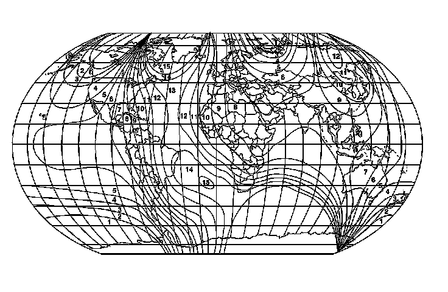
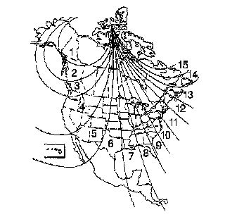

Compass Calibration and Magnetic Variance
Compass Calibration and Magnetic Variance
Compass Calibration
Before calibrating the compass, drive the vehicle to an open area that is magnetically clean or free of large metallic objects such as high tension power lines or large steel buildings. Verify there are no magnetized roof antennas, magnets on or hanging from the mirror, or any other magnetized objects on the inside or outside of the vehicle close to the mirror.
1. Start the engine.
Important: Before calibrating the compass, make sure the mirror has the correct zone number. Refer to Compass Magnetic Variation Adjustment.
2. Press and hold the switch for the compass, which may be depicted as COMP, COMPASS, or on/off (w/UE1) depending on the type of mirror on the vehicle, until the letter "C" or "CAL" is displayed.
3. Drive the vehicle in circles at a speed of less than 8 km/h (5 mph) until the "C" or "CAL" is replaced by a proper vehicle heading. The calibration procedure is now complete.
Compass Magnetic Variation Adjustment
Magnetic variation adjustments are required when the compass displays a constant error in heading. Variation is the difference between magnetic north and true north due to geographical location.
World Magnetic Variation Map


1. Locate your current geographic location on the World Magnetic Variation Map.
2. Turn ON the ignition, with the engine OFF.
3. Press and hold the switch for the compass, which may be depicted as COMP, COMPASS, or on/off (w/UE1) depending on the type of mirror on the vehicle, until a zone number appears on the compass display.
4. Depress the switch for the compass to select the desired zone number.
5. Wait 5 seconds. The display will return to a compass heading. The variance procedure is now complete.
6. Calibrate the compass. Refer to Compass Calibration mentioned above.